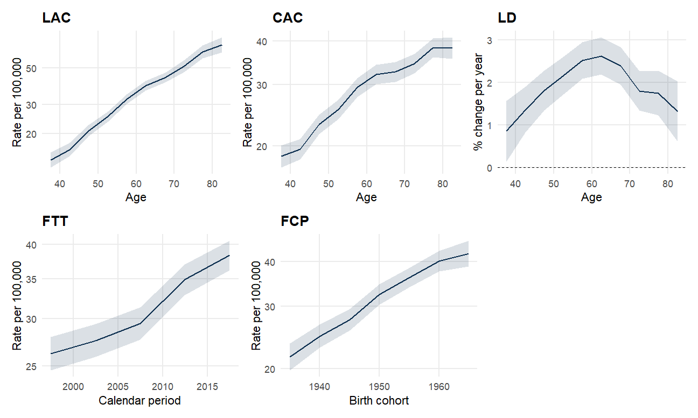
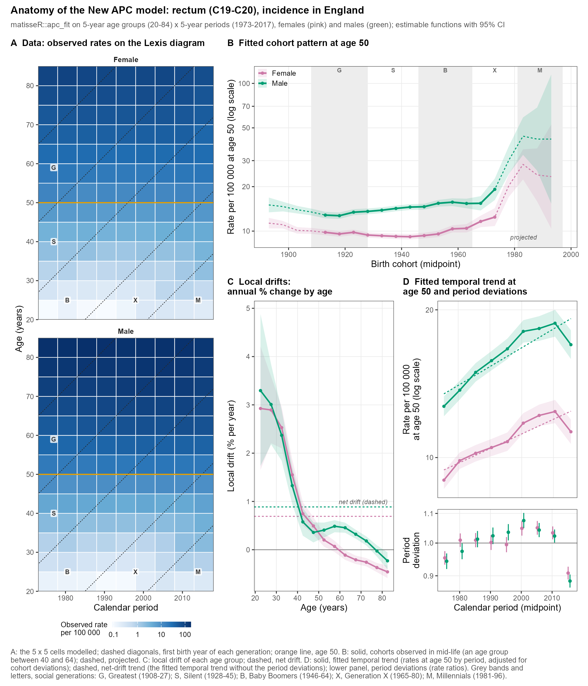

R55 <- rates_fill(rates_chunk(matisse_example(1), age_block = 5, per_block = 5))
M <- apc_fit(R55)
M$net_drift # percent per year
2.0053 M$method[1] "wls"Fit the model and read its estimable functions
MODULE 2 OF 6 · ABOUT 2 HOURS · INTERMEDIATE
apc_fit() and interpret the net drift;
Age, period and cohort are linked by one equation: cohort = period - age. If you know any two, you know the third. As a result, you cannot attribute the linear part of a trend uniquely to period or to cohort. A steady 2% yearly rise in rates could be a period effect (everyone’s risk changes together) or a cohort effect (each generation starts higher than the one before), and the data cannot tell them apart. This is the classic identification problem of APC analysis.
The New APC model (Rosenberg, Stat Methods Med Res) sidesteps it. Instead of reporting parameters that cannot be identified, it reports quantities that can, called estimable functions, and it keeps the unidentifiable linear trend in one clearly labeled number, the net drift:
The model is a log-linear regression on the rates of a Lexis diagram. By default matisseR fits it by weighted least squares on log rates with the covariance scaled for overdispersion (method = "wls", as in MATISSE). A Poisson regression is available with method = "poisson".
Prepare the data as in Module 1 (5 x 5 cells, zeros filled) and fit:
2.0053 [1] "wls"The net drift of about 2% per year says that, across ages and periods, rates rise about 2% each year. The confidence interval of each estimable function comes from the model’s covariance matrix, so you can judge how precise this is.
Because the example data are synthetic, you can check the answer. The index lists the true net drift that generated each dataset. Compare it with the estimate from the single-year cells (1 x 1) and from 5 x 5 cells:
ids <- c(1, 5, 6)
net_drift <- function(i, k) apc_fit(rates_fill(rates_chunk(matisse_example(i), k, k)))$net_drift
data.table(example = ids,
site = matisse_example()[number %in% ids, site],
true_net_drift = matisse_example()[number %in% ids, net_drift],
estimated_1x1 = sapply(ids, net_drift, k = 1),
estimated_5x5 = sapply(ids, net_drift, k = 5))| example | site | true_net_drift | estimated_1x1 | estimated_5x5 |
|---|---|---|---|---|
| 1 | melanoma | 1.86025 | 1.77948 | 2.00535 |
| 5 | breast | 0.66273 | 0.62253 | 0.77015 |
| 6 | lung | 0.31726 | 0.30880 | -0.01055 |
In these three examples the single-year estimates are within about 0.1 percentage points of the truth. The 5 x 5 estimates are less close: for the lung example, whose true drift is near zero, the 5 x 5 estimate is about zero. Coarser cells leave only five periods to estimate a trend from, and the counts are random Poisson draws, as in real data. Wider cells are not always better: they gain stable counts and lose time resolution.
Fit examples 2, 3 and 4 the same way and compare each estimate with matisse_example()$net_drift. Example 3 is a small population with many zero cells. Is it estimated as well as example 2?
An estimable function (EF) is a curve built from the model’s coefficients that does not depend on how the unidentifiable linear trend is assigned. matisseR provides five. Each is a slice through the fitted Lexis diagram:
| Function | comp |
Shows | Reference value |
|---|---|---|---|
| Longitudinal age curve | "lac" |
Rates by age along one birth cohort | a reference cohort |
| Cross-sectional age curve | "cac" |
Rates by age within one period | a reference period |
| Fitted temporal trend | "ftt" |
Rates by calendar period at a fixed age | a reference age |
| Fitted cohort pattern | "fcp" |
Rates by birth cohort at a fixed age | a reference age |
| Local drifts | "ld" |
Annual percent change at each age | none |
By default the reference age and period are the central ones, and the reference cohort is the one passing through them. apc_ef() returns one function and apc_efs() returns several in a single long table, with 95% confidence limits:
| ef | reference | from | to | points |
|---|---|---|---|---|
| lac | 1950.0 | 37.5 | 82.5 | 10 |
| cac | 2007.5 | 37.5 | 82.5 | 10 |
| ftt | 57.5 | 1997.5 | 2017.5 | 5 |
| fcp | 57.5 | 1915.0 | 1980.0 | 14 |
| ld | NA | 37.5 | 82.5 | 10 |
| ef | ref | x | value | lo | hi |
|---|---|---|---|---|---|
| fcp | 57.5 | 1915 | 17.067 | 14.366 | 20.277 |
| fcp | 57.5 | 1920 | 16.860 | 14.822 | 19.179 |
| fcp | 57.5 | 1925 | 19.474 | 17.483 | 21.691 |
The model can carry every cohort to the reference age, including cohorts that were never observed near that age. Those values are projections, and projection is not covered in this course. From here on we keep only the cohorts with a Lexis cell within 5 years of the reference age. The course helper observed_cohorts() finds them, and you can read it in the setup file.
[1] 1935 1965Rates are per 100,000 person-years for LAC, CAC, FTT and FCP. Local drifts are annual percent changes. Plotting uses a small helper, plot_ef(), defined in the course setup file (open it to read it):
plot_ef <- function(E, comp, xlab, ylab, log = comp != "ld", colour = "#0B2E4F") {
d <- E[ef == comp]
p <- ggplot(d, aes(x, value)) +
geom_ribbon(aes(ymin = lo, ymax = hi), fill = colour, alpha = 0.15) +
geom_line(colour = colour, linewidth = 0.7) +
labs(x = xlab, y = ylab, title = toupper(comp))
if (log) p <- p + scale_y_log10()
if (comp == "ld") p <- p + geom_hline(yintercept = 0, linewidth = 0.3, linetype = 2)
p
}
Read the figure like this:
The cohort pattern depends on the reference age you choose. apc_fcp() lets you set it, and it can use any age, interpolating between age groups:
| cohort | rate_age50 | rate_age60 |
|---|---|---|
| 1935 | NA | 23.7 |
| 1940 | NA | 27.1 |
| 1945 | 19.5 | 30.2 |
| 1950 | 22.9 | 35.5 |
| 1955 | 25.5 | 39.5 |
| 1960 | 28.5 | 44.1 |
| 1965 | 29.9 | NA |
| 1970 | 33.1 | NA |
Each age has its own set of observed cohorts: older cohorts are observed at age 60, younger ones at age 50. A cohort missing from a column was not observed near that age. Choose an age that matters for your question and at which the cohorts you want to compare are observed. The case studies use age 50.
The figure below is the “anatomy” of the New APC model from the Europe case study: rectum cancer incidence in England, women (pink) and men (green). It combines everything in this module. Its caption explains each panel.

Preliminary figure from the Europe case study (work in progress). Dashed and faded parts are cohorts projected to the reference age; projection is not covered in this course. (A) Observed rates in the 5 x 5 Lexis cells, ages 20 to 84 and periods 1973 to 2017; dashed diagonals mark the first birth year of each social generation and the orange line marks age 50. (B) Fitted cohort pattern at age 50; solid for cohorts observed in mid-life, dashed for projected cohorts. (C) Local drift of each age group, with the net drift dashed. (D) Fitted temporal trend at age 50 (solid), the trend from net drift alone (dashed), and period deviations below.
Find the estimable functions in the figure. Which panel shows the FCP? The FTT? Which line in panel C is the net drift, and at which ages do the local drifts fall below it?
What does the net drift of an APC model measure?
The net drift is the one number that keeps the unidentifiable linear trend. It appears in both the fitted cohort pattern and the fitted temporal trend. Everything else in the model is curvature.
Which estimable function shows how rates at a fixed age differ between successive generations?
FCP plots the rate at a reference age against birth cohort. FTT plots the same age against calendar period, and the age curves (LAC, CAC) plot rates against age.
Local drift at age 70 is 1.8 (percent per year). What does that mean?
Local drifts are annual percent changes in the rates of each age group over time. They combine period and cohort influences, just as the net drift does.
Finished this module? Mark it complete to track your progress.